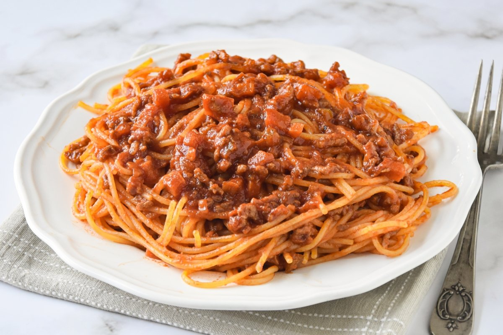

Recetas de platos fuertes
Pollo al Horno con Papas

Ingredientes
| Ingrediente | Cantidad |
|---|
| Pollo entero | 1 unidad |
| Papas | 4 unidades |
| Ajo | 3 dientes |
| Romero | Al gusto |
| Aceite de oliva | 2 cucharadas |
| Sal y pimienta | Al gusto |
Preparación
- Precalentar el horno a 180°C.
- Sazonar el pollo con ajo, romero, sal, pimienta y aceite de oliva.
- Colocar el pollo en una bandeja para hornear.
- Pelar y cortar las papas en rodajas, añadirlas a la bandeja y rociarlas con aceite de oliva.
- Hornear durante 1 hora o hasta que el pollo esté dorado y cocido.
- Servir caliente.
Spaghetti a la Bolognesa

Ingredientes
| Ingrediente | Cantidad |
|---|
| Spaghetti | 200g |
| Carne molida de res | 300g |
| Tomate triturado | 400g |
| Cebolla | 1 unidad |
| Ajo | 2 dientes |
| Vino tinto | 1/4 de taza |
| Sal y pimienta | Al gusto |
Preparación
- Cocer el spaghetti según las instrucciones del paquete.
- En una sartén, sofreír la cebolla y el ajo picados hasta que estén dorados.
- Agregar la carne molida y cocinar hasta que se dore.
- Incorporar el tomate triturado y el vino tinto, sazonar con sal y pimienta.
- Cocer a fuego lento durante 20 minutos.
- Servir la salsa sobre el spaghetti cocido.